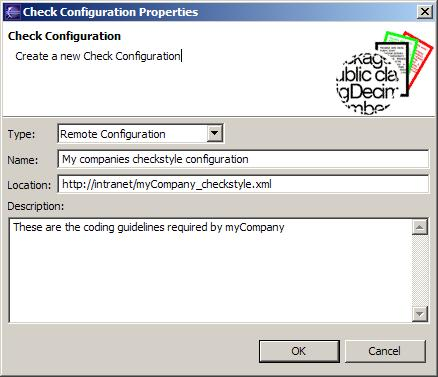
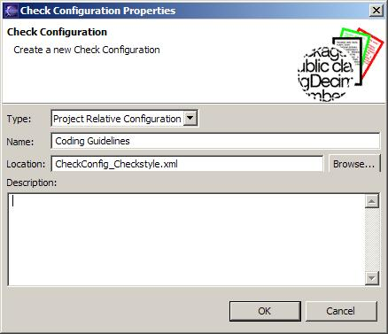

Most software projects involve more then one person and a team repository is used to manage and share files
among the team members.
The Eclipse Checkstyle plug-in supports working in a team environment with a repository.
The following discussion provides the information you need to know when working in a team environment.
Check Configurations are defined in your workspace preferences. Since they are part of your workspace's preferences they are stored on your local file system by Eclipse in a location that is not shared via your team repository. To share a Check Configuration with other team members use the Import/Export facility on the Checkstyle preferences page. Have one team member define the Check Configuration to be used by the team and then distribute that Checkstyle configuration file to all the team members.
One approach for distributing the file is to put it on your companies intranet server. Have each team member using this configuration by creating a remote check configuration using the file's intranet URL.

Another option to store the Checkstyle configuration file within your eclipse project and put it under version control. Have each team member using this configuration by creating a project relative check configuration.

This even allows you to have project specific configurations in each project with the same configuration file
name. Each if these project use then the same project specific configuration set up in the preferences.
When Checkstyle is invoked on the project the specific configuration file is loaded and used with the project.
Once Checkstyle is configured for a project via the project's properties page the plug-in will create a file named .checkstyle in root of the project. This file can then be shared with all the team members via the repository just as the .project and .classpath files are.
Important Note: File Set configurations refer to their Check Configuration by the Check Configuration's name. To avoid having bad references the imported Check Configuration must be named the same in each team member's workspace. Otherwise, the shared .checkstyle file will point to a non-existent Check Configuration in someone's workspace.